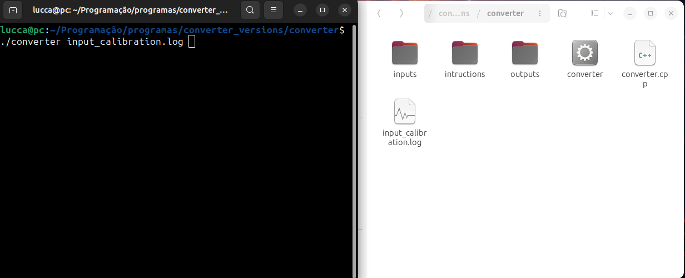

O Converter é um programa desenvolvido para transformar arquivos no formato .log em arquivos .pqr e também gera dois arquivos auxiliares: charges_atoms.log e xyz.log. O primeiro contém os átomos e suas respectivas cargas, enquanto o segundo armazena as coordenadas extraídas do arquivo .log. É um programa voltado para análises na área da química computacional, para agilizar o processo de montagem do arquivo .pqr utilizado em softwares de cálculo de ccs. Sua execução é direto no terminal exigindo do usuário um conhecimento prévio do uso do Linux.
Ao fazer o Download do programa ele virá em um arquivo.zip, basta extrair e será obtido os seguintes arquivos:
Temos as pastas inputs e outputs, que são utilizadas para o armazenamento dos arquivos. Temos também a pasta de intruções, que tem as intruções em inglês e em português. Por fim temos o arquivo converter.cpp e seu respectivo executável, o converter. Para efeito de calibração do aplicativo, isto é, para que o usuário saiba que foi corretamente instalado, temos um arquivo .log de calibração.
Para a execução do aplicativo é dado o comando ./converter + nome do .log, no caso da imagem abaixo foi utilizado o input de calibração como teste.
Após a execução obtemos as cargas e as coordenadas atômicas das moléculas que foram extraídas do .log e temos o arquivo output.pqr é o arquivo que é utilizado para o cálculo de ccs.
Voltar para a página inicial Voltar ao topo Quero este app!